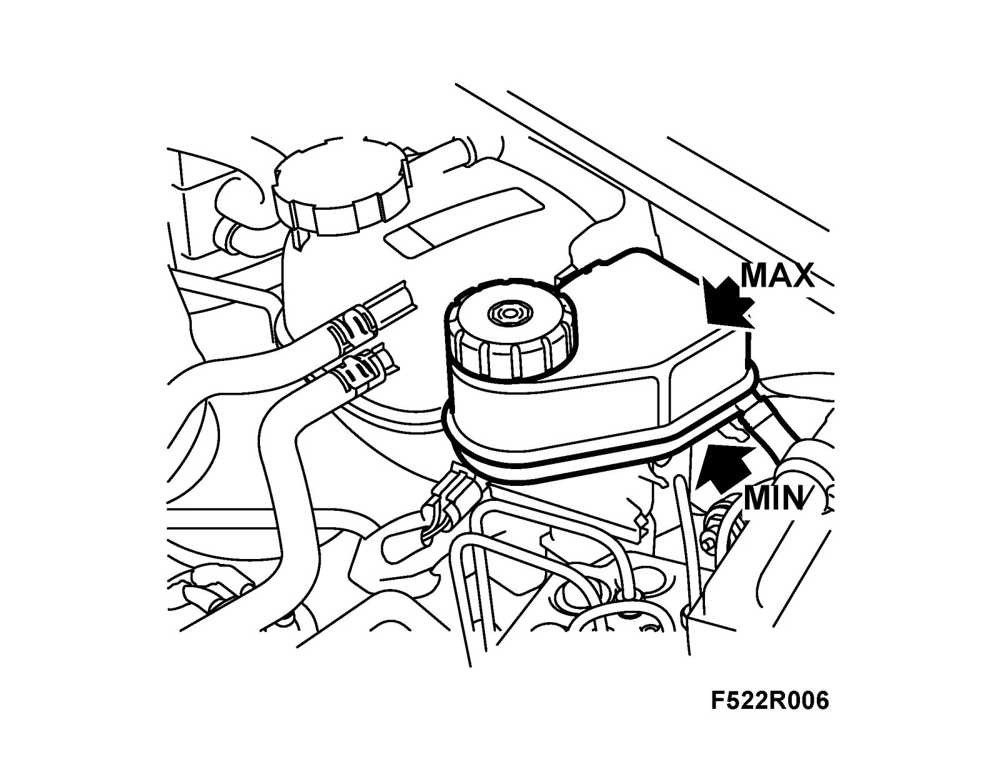

Brake Fluid: Testing and Inspection
Checking brake fluid1. Test the quality of the brake fluid with 89 96 985 Brake fluid tester.
Note
It is important that the tester is below the surface of the fluid.
LHD: It may be difficult to insert the probe into the reservoir.

Warning
Never top up with brake fluid before measuring or the measurement will apply to the new brake fluid and give the wrong quality indication.
If the fluid level is too low to allow for testing in the reservoir, use the pipette and measuring glass.
If the boiling point is below 190°C, change the brake fluid.
Note
The lowest permissible boiling point for DOT 4 fluid is 155°C. In order that the boiling point should not fall below this level before the next scheduled service, change the fluid if the boiling point falls below 190°C.
2. Check the fluid level using the MIN and MAX markings on the reservoir.
Investigate the cause of low fluid levels. (not during delivery service)
Fill with brake fluid if necessary.
Note
Never use brake fluid from an open container.